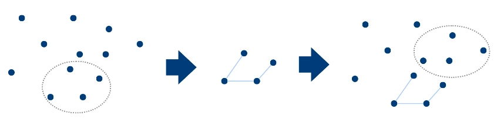
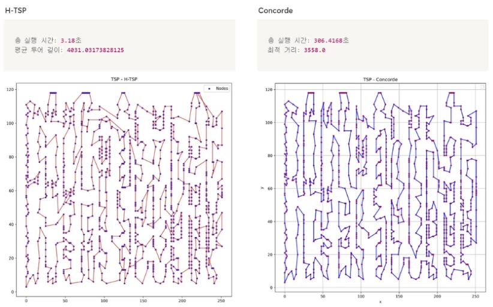
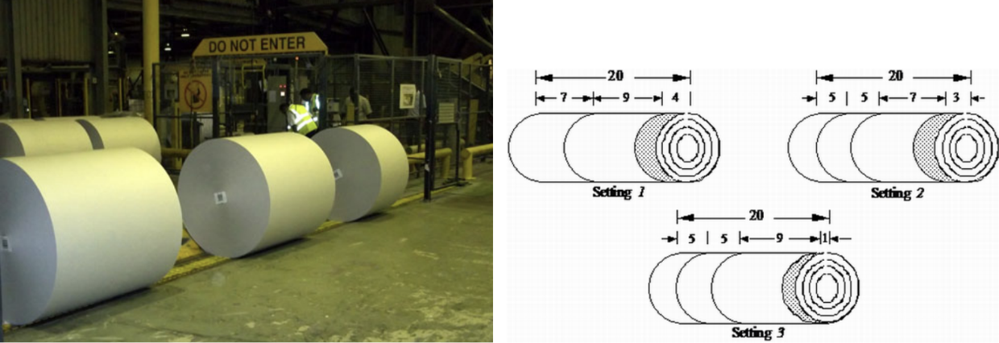
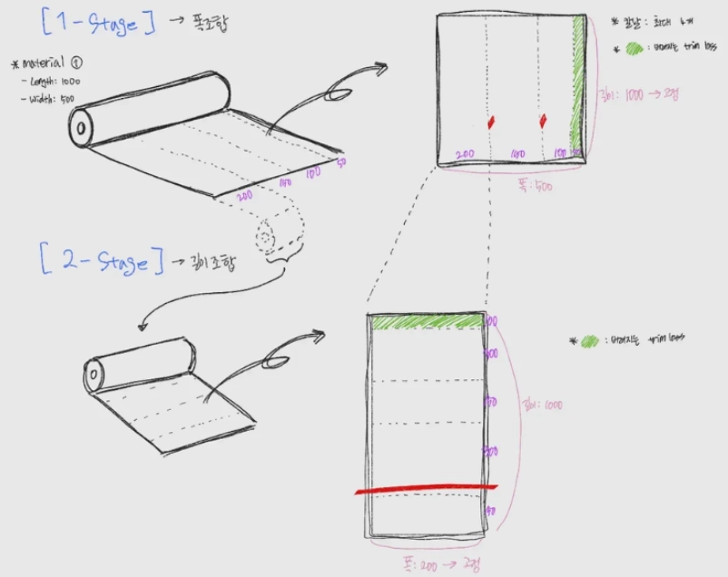

• 좌표 값 범위 오류 규명: 모델은 [0, 1] 범위를 가정하나, 코드상에서 정규분포(torch.randn)를 사용해 발생하는 AssertionError 원인 파악 및 수정 제안
→ GitHub Issue #6 보기• 로직 결함 및 런타임 에러 수정: 특정 하이퍼파라미터 상황에서 변수 미할당으로 발생하는 UnboundLocalError 포착 및 로직 보완
→ GitHub Issue #7 보기• 분석 내용을 문서화하여 GitHub Issue 제기, 핵심 개발자로부터 "정확한 논리적 근거"라는 피드백과 함께 코드 반영 완료


| 항목 | 기존 CBC Solver | 제안 방법론 (GA) | 개선 결과 |
|---|---|---|---|
| 원재료 사용량 | 384개 | 381개 | 3개 절감 |
| Total Trim Loss | 21,008,360 | 17,227,264 | 18% 감소 |
| 과생산율 | 4.67% | 1.95% | 2.72%p 개선 |
| 연산 속도 | 100% (기준) | 48% | 52% 단축 |
⇒ 결론적으로 손실을 18% 절감함과 동시에 기존 Solver 대비 속도를 52% 단축하고, 과생산율을 4.7%에서 1.9%로 감소시킴